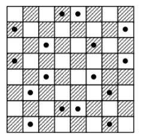

TAŞLAR HİZALI OLMASIN!
16 taşı bir dama tahtasına öyle yerleştiriniz ki asla 3’ü aynı hizada olmasın. Fakat dikkat! Sanıldığı kadar kolay değil bu problem; gizlice hizaya geçmiş taşlar olabilir.
Cevap:

Çözüm şekilde görülüyor. Genel formül şudur: n x n karelik bir dama tahtasına 3’ü aynı hizada olmayan 2n taş konulabilir.
Şeklin simetrik oluşuna dikkat edin. Bu tür problemlerde genellikle bu duruma rastlanır.